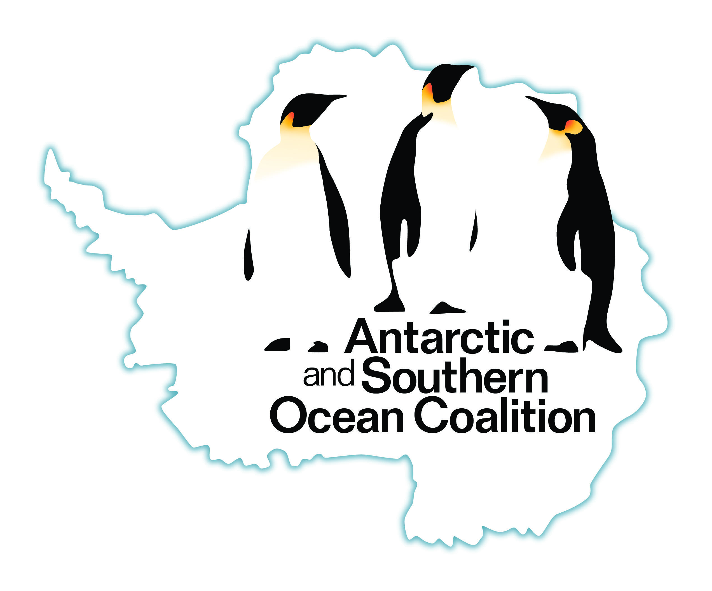
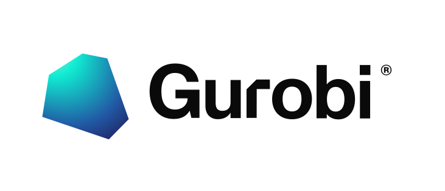

Interactive decision support tool to navigate management options for the Antarctic Peninsula. The tool identifies priority areas for implementing policies for conservation, tourism, and scientific research. To achieve this, it leverages previously published data (Lee et al. 2024) and multi-objective optimization techniques through the prioritizr package (Hanson et al. 2025). Although default parameters are specified based on stakeholder surveys, users can calibrate weights and representation targets to fine tune optimization procedures according to their own preferences. Optimization procedures can be performed with the Gurobi or CBC (via the rcbc package) exact algorithm solvers.
Usage
The application is available online. Please note that you must use Google Chrome for it to work.

|
Installation
The application is available as an online service provided by the Antarctic and Southern Ocean Coalition. If you need to run the application directly on your own computer, then you can run it using the R statistical computing environment, Docker, or Docker Compose. Note that if you choose to run the application directly on your computer, you will need to have obtained a Mapbox token and configured your computer so that the application can find the token.
Obtaining and setting up a Mapbox token
To begin with, you will need to obtain a Mapbox token. This is because the application uses Mapbox for displaying maps. To obtain a token, please refer to Mapbox documentation for detailed instructions. After obtaining a token, you will then need to save the token on your computer.
-
If you intend to run the application using R, you can save the token in your
.Renvironfile. You can use the R codeusethis::edit_r_environ()to automatically find and open this file. After finding and opening this file, you can save the token by adding the following text to it (replacing**INSERT_TOKEN_HERE**with the actual token value). -
Alternatively, if you intend to run the application using Docker or Docker Compose, you can save the token as a system environmental variable named
MAPBOX_PUBLIC_TOKEN. To complete this step on a Windows computer, please refer to these instructions. On a Linux or macOS system, this step can be completed by opening the~/.bashrcfile or~/.zshrcfile (which ever file already exists) and then adding the following text to it (replacing**INSERT_TOKEN_HERE**with the actual token value).
Using R
To use this method, you will need to install the R statistical computing environment. After completing the installation, you can install the application using the following R code:
if (!require(remotes)) install.packages("remotes")
remotes::install_github("asoc-org/asoc")You can then use the following R code to start the application and open it in your web browser:
asoc::run_app()Using Docker
To use this method, you will need to install Docker Engine (see here for instructions). After completing this step, you can install the application from the container repository. Specifically, please use the following system command for the latest stable release.
# run latest stable release
docker run -e MAPBOX_PUBLIC_TOKEN -dp 3838:3838 --name apscp -it ghcr.io/asoc-org/apscp:latestAlternatively, you can instead use the following system command for the most recent developmental release.
# run developmental release
docker run -e MAPBOX_PUBLIC_TOKEN -dp 3838:3838 --name apscp -it ghcr.io/asoc-org/apscp:devAfter running the system command, you can view the application by opening the following link in Google Chrome: http://localhost:3838. After you have finished using the application, you can terminate it using the following system command. Note that if you don’t terminate the application once you are finished using it, then it will continue running in the background.
Using Docker Compose
To use this method, you will need to install Docker Engine (see here for instructions) and Docker Compose (see here for instructions). After installing both programs, you can install the application by cloning this repository and then using the following system commands:
You can then view the application by opening the following link in Google Chrome: http://localhost:3838. After you have finished using the application, you can terminate it using the following system command. Note that if you don’t terminate the application once you are finished using it, then it will continue running in the background.
Getting help
Thank you for checking out this application. If you encounter any software defects (e.g. application crashes, unexpected behavior, or spelling mistakes), please feel free to post them on the issue tracker.
Acknowledgments
This project is supported and led by the Antarctic and Southern Ocean Coalition (ASOC). The data and foundations underlying the project were produced during the SCAR-IAATO Systematic Conservation Planning Project, which was supported by the International Association of Antarctica Tour Operators (IAATO), the Scientific Committee on Antarctic Research (SCAR) and Monash University. This work was supported by Gurobi Optimization through their Gurobi Gives Back program, which provides free access to optimization software for qualifying non-profits.
|
 |
 |